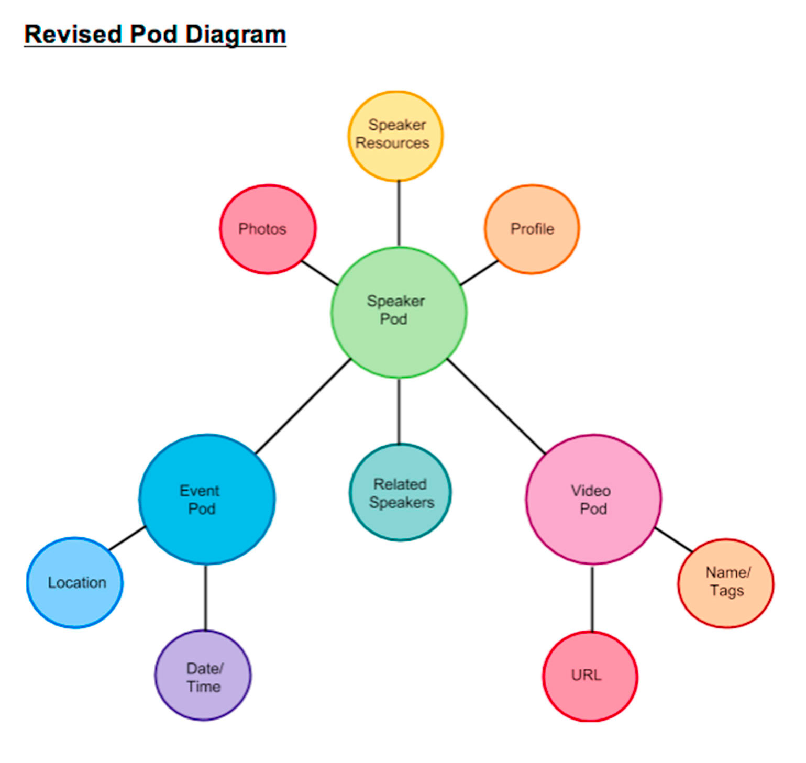

Research Club Knowledge Base Development
The goal of this project was to develop ways Research Club could present the information generated from a series of informal talks and find out the best to implement it in Pods. Over the course of the project, I gained a much deeper of understanding of how to organizes posts and pages but also strategies to take advantage of templating within the WordPress hierarchy. Before starting the project I did not know anything about Pods but now I know how I can use Pods to organize complex sets of information and how to use the templates to make sure that it displays correctly.
Background
Before I was brought on to the project, the client had decided that they will build a new WordPress site and that the information related to the talks will be organized by a plugin called Pods. My job was to analyze and organize the way Research Club should present its information and find out the best to implement it in Pods. Over the course of the project, I gained a much deeper of understanding of how to organize posts and pages but also strategies to take advantage of templating within the WordPress hierarchy. Before starting the project I had only use WordPress for blogs, now I know how I can use Pods to organize complex sets of information and how to use the templates to make sure that it displays correctly.
As for skills that I have developed it is clear that I have much better and deeper understanding of WordPress. We were able to build a new database specific to the project needs on top of the existing WordPress structure. Because I was able to follow the schedule that we outlined at the beginning of the project, the project was delivered on time and on budget. As for Project Management, this was the first time that I used Basecamp on a relatively large, complex project and I found it to be a very useful tool in terms of organizing our discussions as well as tracking resources that might be implemented in the future.
Before this project, I had only been working on websites that I built from the ground up so I was happy to have the experience of coming on to a project midway through and discovering ways within my scope to make a positive contribution. I also liked that these talks were generating a lot of data and that it was my job to make that data accessible. The natural extension of this project would be ways to find out how the relationships between those data points might be visualized.
Diagrams
WordPress organizes posts according to Categories and Tags. Not only does this allow the posts to be searchable but also allows the posts to be filtered. This is a diagram of a standard WordPress post:
The Speaker Pod would contain or have references to several different types of information including any speaker resources like their personal website, speaker photos, any social media, information about the event itself and any videos that were associated with the talk. Here was our first diagram:

I extended the diagram by adding some of the properties that might be added to the Pods to match the data that was going to be generated by the speaker.
Up until this point, the video of the speaker was an aspect of the Speaker Pod. After some tests, it was realized that not only would this would allow the speaker to have only one video that would be associated with it. This was a problem because if speaker was to return to Research Club then they would automatically generate multiple videos.The solution was to allow both Videos and the Events to become their own pods. This allows the videos to be independent of the speaker and allow any Speaker or Event Pod to have multiple videos. This was the final working diagram:

Organization
The next step was to apply the relationships of defined in the diagrams inside the WordPress plugins called Pods. Pods would allow me to structure the data generated by Research Club within the clearly defined fields of each Pod. This meant that the Speaker Pod would need places to store all of the data associated with each talk including photos, videos, blog posts and social media links. Each field in the Pod has a specific characteristic taht defines what kind of data is allowed in the field. By using bi-directional fields I was able to share data fields between two pods. Here is the Speaker Pod definition:
After some experimentation, I was able to create a similiar definition for the Event Pod.
Implementation
Once each one of the Pods was defined, it was time to begin to load them up with placeholder data. Here is an example of a typical speaker:
A typical event with data was developed from the Event Pod
Templates
In order to format the data that is entered into the Speaker Pod fields, I needed to use a template. The template was able to take advantage of Pod's magic tags to grab fields from a pod and place the data from the field in an HTML document. By iterated through a field, I was able to pick up multiple values like if the speaker had multiple videos associated with a talk or if an event is associated with multiple speakers. Here is an example of the some of the Speaker Pod template:
The template is rendered as an HTML document as in this example of a speaker page: